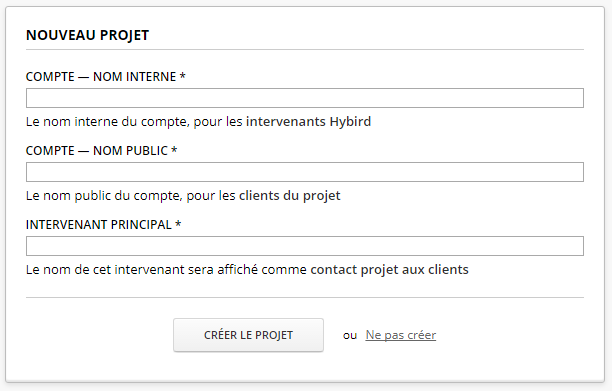
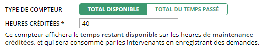
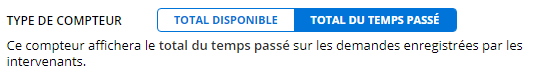

documentation hymaintenance
Version 1.0
Ce guide de démarrage décrit les premiers pas d'utilisation d'hymaintenance 1.0 — Comment créer et configurer un projet de maintenance, avec ses compteurs et intervenants mainteneurs et clients.
Créer un projet
Lors de votre première connexion, vous aurez l'occasion de créer votre projet initial.
Le formulaire de création de projet est accessible depuis la page d'accueil des intervenants mainteneurs — le Tableau de bord.
On y accède en cliquant sur le bouton Ajouter un projet de la barre récapitulative en haut de la page.
Vous pouvez configurer les détails des compteurs du projet, leur façon de compter et leur visibilité. hymaintenance contient 3 types de compteur par défaut. Pour gérer la maintenance évolutive : le compteur maintenance, puis le compteur du support, et enfin pour la maintenance corrective — le compteur corrections.

Compteurs et visibilité
Les compteurs peuvent être désactivés projet par projet.
La visibilité du compteur Visible à tous permet de spécifier qu'il est accessible aux mainteneurs et aux clients.
Un compteur est dédié uniquement aux mainteneurs s'il est Invisible aux clients — par exemple pour des tâches internes ou non facturées.
Ce compteur sera visible par les managers du projet, et utilisable par les intervenants dans les tableaux de bord et pour enregistrer des demandes.
Un compteur sachant compter
Les compteurs de type Total disponible permettent de donner une quantité d'heures disponibles pour le client. Chaque intervention effectuée par les mainteneurs consommera une partie de ce temps disponible. Le client verra toujours le récapitulatif du temps restant utilisable, ainsi que les activités qui ont consommé ce crédit.

Pour les compteurs de type Total du temps passé, le client verra le temps total que les mainteneurs ont passé durant les interventions du mois.

Intervenants
Les mainteneurs qui font — et enregistrent — les interventions.
Le formulaire d'ajout de mainteneur est accessible depuis le Tableau de bord des mainteneurs.
On y accède en cliquant sur le bouton Ajouter un intervenant de la barre récapitulative en haut de la page.
On associe des mainteneurs à un projet précis avec le bouton Modifier de la liste des intervenants présente dans le bloc d'un projet.
C'est pas fini! — Il faut coder et documenter le moyen d'ajouter un intervenant à un projet donné. Le moyen de supprimer un intervenant de l'application en général, mais aussi l'enlever d'un projet. Et aussi comment modifier les informations de l'intervenant — nom, email, ...
Managers
Les utilisateurs clients, qui ont besoin de visibilité sur un projet maintenance.
Depuis leur Récapitulatif les managers voient l'état des compteurs, l'historique et la liste des activités qui ont consommé du temps disponible.
Le formulaire d'ajout de manager est accessible depuis le Tableau de bord des mainteneurs.
On y accède en cliquant sur le bouton Modifier de la liste des managers présente dans le bloc d'un projet.
C'est pas fini! — Il faut coder et documenter le moyen de supprimer un manager d'un projet donné, et comment modifier les informations du manager — nom, email, ...
Salariés
Les auteurs des demandes d'intervention.
Le formulaire d'ajout de salarié est accessible depuis le Tableau de bord des mainteneurs.
On y accède en cliquant sur le bouton Modifier de la liste des salariés présente dans le bloc d'un projet.
C'est pas fini! — Il faut coder et documenter le moyen de supprimer un salarié d'un projet donné, et comment modifier le nom du salarié
Les canaux
Le moyen de communication utilisé lors d'une demande d'intervention.
Les salariés font des demandes d'intervention par un canal de communication qu'il peut être utile de spécifier — par exemple pour tracer les demandes par téléphone. hymaintenance 1.0 contient par défaut 3 canaux dans une liste configurable.
C'est pas fini! — Il faut coder et documenter comment créer un nouveau canal pour un projet donné, comment les modifier et supprimer.
Enregistrer une intervention
À automatiser en connectant hymaintenance à votre outil de gestion de tickets.
Le formulaire d'enregistrement d'intervention est accessible depuis le Tableau de bord des mainteneurs.
On y accède en cliquant sur le bouton Enregistrer une demande dans le bloc d'un projet.
Les détails de la demande d'intervention permettent de tracer le besoin et son origine.
La résolution permet de comptabiliser le temps passé et le compteur à utiliser, ainsi que les détails de validation utiles au projet.
Types de maintenance
Sûrement plutôt une feature « Renommer les 3 compteurs existant » — Réfléchir à si c'est au même endroit qu'on doit ajouter les informations
de renouvellement automatique des contrats ou si on évite pour l'instant.
En plus c'est pas fait...